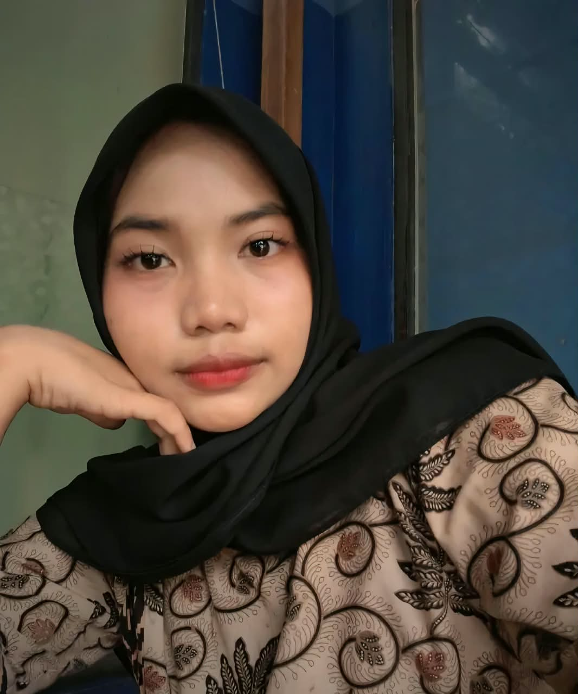
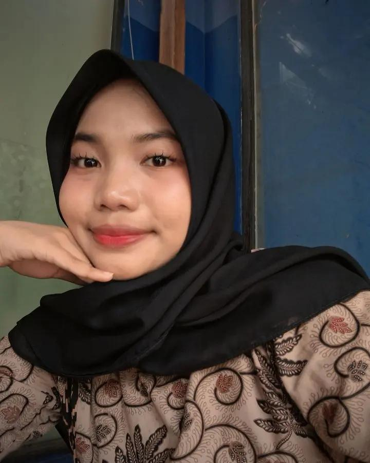
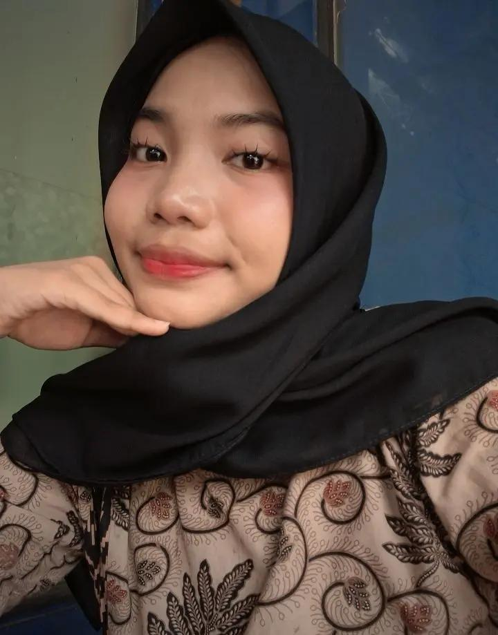
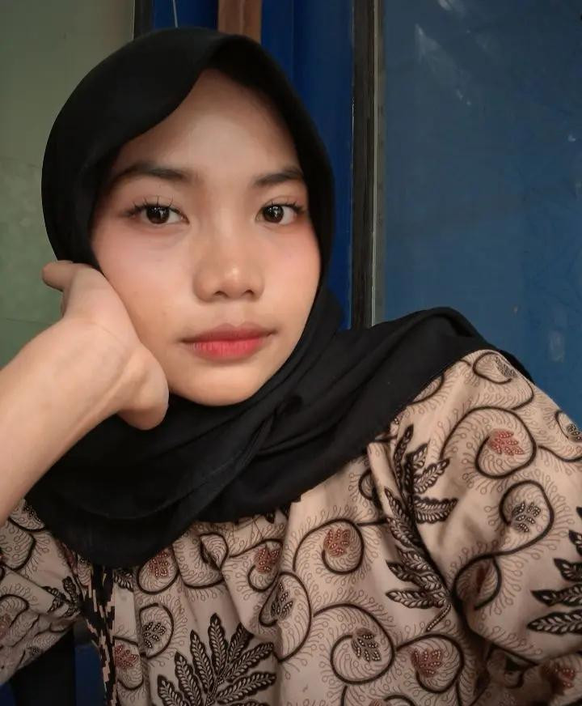

Amira Hasna Fauziyyah
NIM: 0110226037
Program Studi: Teknik Informatika
Email: 0110226037@student.nurulfikri.ac.id
Telepon: 089655613809
Halo! Saya Amira Hasna Fauziyyah, mahasiswi aktif semester 4 Program Studi Teknik Informatika di STT Terpadu Nurul Fikri.
Senang bisa berkenalan dengan kamu yang berkunjung ke halaman web ini. Saya adalah seseorang yang menikmati proses belajar hal-hal baru, terutama yang berkaitan dengan teknologi, kreativitas, dan eksplorasi dunia digital.
Video Profil
Koleksi Foto


